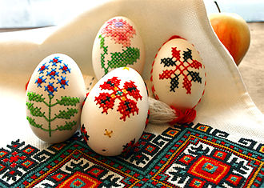
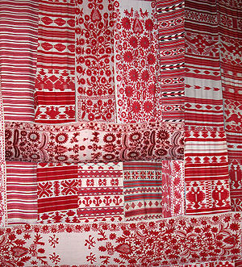
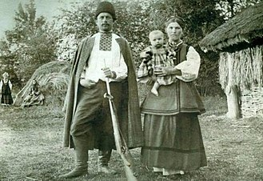
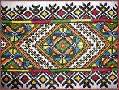
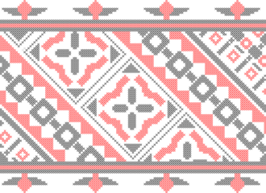
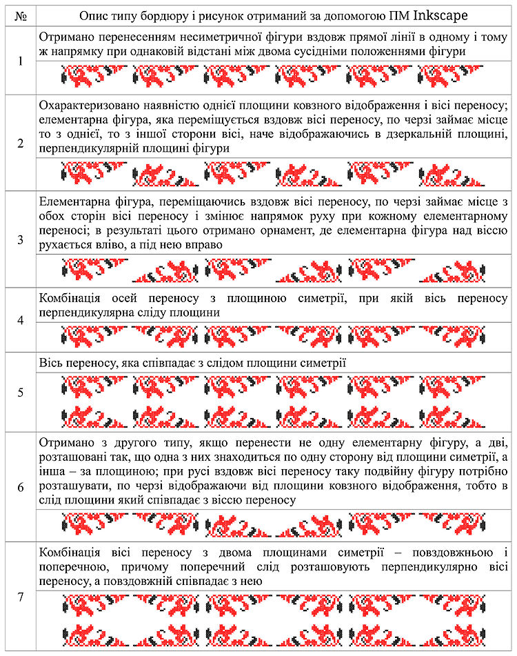
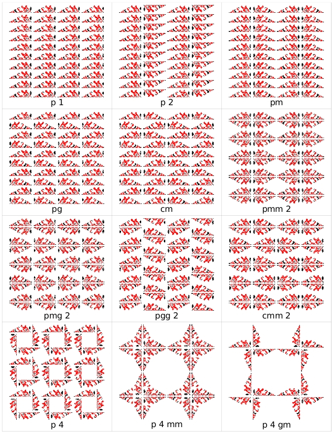
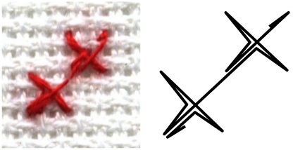

Українське мистецтво вишивання має давнє походження, витоки якого сягають епохи неоліту.
Вишивки були відомі ще в II ст. до н. е. Стародавнє поширення одягу з вишивкою на території України засвідчують зображення на творах декоративно-ужиткового мистецтва скіфської доби (золота пектораль з кургану Товста могила (IV ст. до н. е.), срібна ваза з кургану Чортомлик (IV ст. до н. е.), чаша з кургану Гайманова могила (IV ст. до н. е.) та ін.). На знаменитій куль-обській вазі можна розрізнити сітчасті візерунки: ромби, кола, хрести. Металеві фігурки так званих «танцюристів» із мартинівського скарбу на Черкащині (IV ст. н. е.) мають на пазусі сорочок широку манишку з сітчастим орнаментом, яка сягає від коміра до пояса. Подібну «манишку» виявлено на бронзовій статуетці з-під Хорола на Полтавщині (IV—VII ст. н. е.)[
Оздоблювався вишивкою також і одяг сарматів, які тривалий час мешкали на території сучасної України (курган Соколова Могила, І ст. до н. е.; курган Сватова Лучка, І ст. до н. е.)[1]. Унікальною є саме знахідка з Сокольської могили: вона стала свідченням високої майстерності вишивання золотом «в прикріп» та технікою пряденого золота, і вірогідно, є наслідком попереднього тривалого розвитку вишивального мистецтва найдавнішого з досі відомих.
Дослідження Селівачова вказують, що ранні зразки давньоруського шитва мали попередників (або аналоги) у вигляді зображень чорнилами на полотні. До таких належить антимінс 1148 р. з Петербурзького Ермітажу. У центрі квадратного за форматом суворого рідкого полотна тонкими лініями. Зображений восьмикінцевий хрест. Широка площа навколо нього обрамлена з чотирьох боків написами, серед яких згадується ім'я князя Юрія Долгорукого. Композиція, на думку М. Р. Селівачова, дуже схожа на вишивку і може тлумачитись як накреслений узор для вишивання або наслідування техніці вишивання чорнильним малюнком.
У дослідженнях Р. Захарчук-Чугай вказується на поширеності вишивки через присутність її у «вбраннях» численних «кам'яних баб», які «сторожать» південно-українські території від часів половецьких наскоків: на ньому чітко проглядається вишивка на уставках, подолах, манжетах. З поховань Х — XI ст. (фрагменти шовкових тканин з вишивкою золотими нитками: налобні пов'язки — чільця, стрічки, стоячі комірці, нарукавники, пояси, кайми, плащі тощо) відомо про широке застосовування у цей час вишивки для прикрашання тканин одягового та обрядово-інтер'єрного призначення. Відома одна пам'ятка 900—1100 рр. (з с. Жишава на Тернопільщині), в якій технікою «в прикріп» виконаний складно ромбовий розвід з розетками на краях ромбів у круглих обрамленнях.
Великий вплив на характер вишивки мали ткані візантійські матерії. Про вишивку на білій сорочці українців є звістки ХІ–ХІІ ст. візантійських письменників. Відомі малюнки на мініатюрах і фресках в Україні тієї ж доби. Ще в ХІ ст. на Русі існувала перша вишивальна школа, організована сестрою Володимира Мономаха — Ганкою, де дівчата вчилися гаптувати золотом і сріблом. Про українські вишиванки згадують іноземні мандрівники XV–XIX ст. Збереглися вишиванки з козацьких часів 17–18 ст. У 16–18 ст. центрами вишивання були Качанівка на Чернігівщині, Григорівка на Київщині, Велика Бурімка на Черкащині та інші. Вишивали у кожному селі, монастирях, дворянському, купецькому середовищі. У 19–20 ст. відкривалися навчально-кустарні майстерні, художньо-промислові артілі, великі спеціалізовані підприємства з вишивки.
Вважається, що основне призначення вишивки — прикрашання одягу та інтер'єрно-обрядових тканин.
В Україні налічувалось близько 100 видів і технічних прийомів вишивання (гладь, хрестик, низь, мереження, бігунець, плетіння тощо).
Композиційне вирішення української вишивки відзначається безмежною фантазією, колоритом. І все ж переважає стрічкова, букетна і вазонна композиції. Відповідно до етнографічних особливостей вишиванки виявляють чимало регіональних відмінностей. Притому, українські вишиванки мають один спільний для всіх земель стиль, так що їх неважко розпізнати серед вишиванок інших народів — слов'янських і неслов'янських. Архаїчні зразки, звичайно одного кольору, відомі були на Поліссі, Волині й Бойківщині.
Строго геометрична низь поширена на Гуцульщині, Поділлі, Полтавщині
Сильно стилізовані рослинні мотиви властиві для Побужжя, Волині, Поділля, Буковини. Більше рослинного характеру, з натуралістичним і мальовничим трактуванням вишиванки Київщини і особливо Полтавщини. Мережка і загалом ажурні вишиванки відомі на Полтавщині, середньому Поділлі й Покутті.
Кольори української вишиванки загалом відомі в обмеженій кількості й гармонійних сполуках. Найбільше уживані чорна і червона барва або чорна, червоногаряча і жовта. Часами долучають також зелену й синю. Рідко вживаються срібна, золота і сіра нитки. Взагалі багатство барв збільшується з півночі на південь.
Мотиви. Спеціальні мотиви вживалися для чоловічих сорочок, інші — для жіночих і дитячих. Різні мотиви для людей старших і молодших. Відмінні мотиви і барви для рушників та обрусів, для речей буденних, весільних і жалобних. Вишивка — це не тільки майстерне творіння золотих рук народних умільців, а й скарбниця вірувань, звичаїв, обрядів, духовних прагнень, інтелекту українського народу. Численні орнаментальні зображення тварин, птахів, рослин, дерев, квітів стверджують, що наші предки обожнювали їх, опоетизовували природу не лише у фольклорі, а й у декоративному мистецтві. Наприклад, рушники з вишитими зображеннями голубів, півнів, коней, хрестиків тощо були своєрідними оберегами, що захищали людину від злих сил.
Вагоме значення мала й кольорова семантика (червоний — любов, жага, світло, боротьба; чорний — смуток, нещастя, горе, смерть; зелений — весна, буяння, оновлення, життя тощо). Солярні знаки, схематичні фігури Сонця, Берегині, Дерева життя, вишиті на тканині, є ще одним свідченням глибокої шаноби наших пращурів до Сонця, Матері, як могутніх, святих, життєдайних першооснов усього сущого. Крім того, вишивання як національна традиція сприяло формуванню у дівчат і жінок терпіння, відчуття краси. Дівчина мала вишивати милому сорочку, хустину, весільні рушники. Вишитий своїми руками одяг був одним із головних показників працьовитості юнки. Вишивка сьогодні живе, розвивається, збагачується новими аспектами. Сьогоднішня українська вишивка — результат унікальної духовно-матеріальної еволюції нашого народу. Впродовж багатьох століть в українській вишивці знаходять відображення думки і настрої людини, краса довкілля, її мрійливі сподівання на кращу добру долю, людські вірування, оберегова символіка речей, позначених доторком голки з ниткою.
Північна частина Київської області (Чорнобиль, Іванків, Димер, Бородянка) входить до етнографічного регіону Полісся. Тут переважають сорочки вишиті давніми техніками: занизування, заволікання, рідше — хрестик. Ці техніки дозволяють створювати геометричні орнаменти. Колір вишивки переважно червоний або чорний з незначними доповненнями інших кольорів.
Основна частина Київської області на правому березі Дніпра (власне Київ, Макарів, Васильків, Богуслав) належить до етнографічного регіону Середня Наддніпрянщина. Київщина. На цій території завдяки жвавим торговельним процесам найшвидше поширювались всі новинки: імпортні тканини, нові форми одягу, орнаменти та техніки вишивки. Найпопулярнішою тут стає так звана «брокарівська» вишивка — рослинні орнаменти, виконані червоним і чорним кольорами у техніці хрестик. Така вишивка в 20 столітті поширюється і на решту регіонів України, але саме на Центральній Київщині вона стає широко вживаною вже з кінця 19 століття. Але зберігається тут і більш давня вишивка — білим по білому з традиційними геометричними орнаментами або нитками складного вохристого кольору, фарбованими в корі дуба.
Основна частина Київської області на правому березі Дніпра (власне Київ, Макарів, Васильків, Богуслав) належить до етнографічного регіону Середня Наддніпрянщина. Київщина. На цій території завдяки жвавим торговельним процесам найшвидше поширювались всі новинки: імпортні тканини, нові форми одягу, орнаменти та техніки вишивки. Найпопулярнішою тут стає так звана «брокарівська» вишивка — рослинні орнаменти, виконані червоним і чорним кольорами у техніці хрестик. Така вишивка в 20 столітті поширюється і на решту регіонів України, але саме на Центральній Київщині вона стає широко вживаною вже з кінця 19 століття. Але зберігається тут і більш давня вишивка — білим по білому з традиційними геометричними орнаментами або нитками складного вохристого кольору, фарбованими в корі дуба.
Основна частина Київської області на лівому березі Дніпра (Бориспіль, Яготин, Переяслав-Хмельницький) входить до етнографічного регіону Середня Наддніпрянщина. Полтавщина. Тут побутують сорочки з традиційними орнаментами, вишитими білим по білому. Техніки вишивки дуже різноманітні: гладь пряма і коса, вирізування, ретязь, скісний вивід і зерновий вивід, мережки і, звичайно ж, хрестик. Орнаменти тут не завжди чітко геометричні, часом вони набувають рослинно-геометричного характеру: «ламане гільце», «деревце», «гарбузове листя». Нитки для вишивки могли фарбувати натуральними барвниками — корою дуба, вільхи — або вишивати невибіленими нитками по білому полотну. Наприкінці 19 століття в моду входить червоно-чорна брокарівська вишивка, що поступово витісняє всі давні орнаменти і техніки. Для вишивки Київської області загалом характерним є одночасне побутування давніх і нових технік вишивки, геометричних і рослинних орнаментів, а також найрізноманітніше їхнє поєднання.
Найбільш поширеними способами вишивання були такі:
Низкою вчених були розроблені методи опису складних симетричних зображень-орнаментів української вишивки, які базуються на алгоритмах формалізації груп перетворень зображень на основі осьових симетрій, мові опису мінімальних рисунків та алгоритмах формалізації рапортів. Принципова можливість моделювання української вишивки обумовлюється тим, що в її основі лежить побудова симетричних структур.
Математична формалізація дає змогу розробити інформаційну модель побудови орнаментів української вишивки і редактор зображень-орнаментів. Математична модель вишивки забезпечує можливість створення нових та економного зберігання наявних зображень-орнаментів, автоматизацію процесу створення та редагування вишивок для відтворення їх у натуральному вигляді (на тканині).
Симетрія є одним із найбільш яскравих композиційних засобів, з допомогою якого створюють елементи вишивки (орнаменти). Вивчення орнаментів вишивки не обмежується знаннями про їх види, колірне вирішення чи інші характеристики зовнішнього виду. Важливою складовою є спосіб утворення композицій орнаментів і їх розміщення на площині.
Для створення бордюрів — лінійних орнаментів використовують такі перетворення: паралельний перенос; дзеркальна симетрія з вертикальною віссю; дзеркальна симетрія з горизонтальною віссю; обертова (центральна симетрія). Найбільш поширеними в українському національному одязі є смуги орнаментів вишивок
Всього існує 7 типів симетрій бордюрів. Створення бордюрів (орнаментальних смуг) виконано за допомогою програми Inkscape. Бордюри (отримані з урахуванням українських національних традицій) можна використовувати для оздоблення сучасних жіночих костюмів. Хоча розрізняють 17 груп симетрії решіткових орнаментів, визначено, що в українському народному одязі використовували лише 12 груп.
 ля підвищення якості вишивання запропоновано новий спосіб заповнення орнаментів вишивки подвійними хрестоподібними елементами (ПХЕ), які дозволяють вишивати орнаменти будь-якої форми без утворення стібків переходу. Оскільки, перехід і закріплення здійснюють за рахунок стібків, що входять до складу ПХЕ. На малюнках представлено схеми розташованих по діагоналі хрестів, утворених стібками різної довжини і утворених ПХЕ та їх фотографічне зображення.
